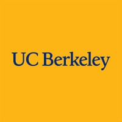

Austin Chan
Software Developer
Experience
Research Intern
June 2024 – August 2024
The ACTION NSF Artificial Intelligence Institute - University of California, Santa Barbara
- Researched applications of LLMs to generate Semgrep queries, achieving 80.87% accuracy.
- Investigated static code analysis techniques, achieving 78.91% accuracy in API vulnerability detection.
Research Intern
January 2024 – February 2024
California State University, Bakersfield
- Implemented parallel computing optimization using C and MPI, reducing computation time by 30%.
- Enhanced efficiency by 25% through improved task synchronization.
Peer Mentor
August 2023 – May 2024
Bakersfield College
- Conducted Physics 2 workshops for 20+ students, improving grades by 15%.
- Increased understanding of thermodynamics, electricity, and magnetism by 20%.

University of California, Berkeley
August 2024 - May 2026
Bachelor of Science in Electrical Engineering & Computer Science
- Relevant Coursework: CS 61A, EECS 16A, CS 61B (Spring 2025), EECS 16B (Spring 2025).
- GPA: 4.00
Bakersfield College
August 2022 - May 2024
Associate of Science in Computer Science
- Relevant Coursework: Data Structures and Algorithms (C++), Computer Architecture, Discrete Math.
- Honors and Awards: Dean’s List, Summa Cum Laude. GPA: 4.00
Tech Stack
Projects
Contact